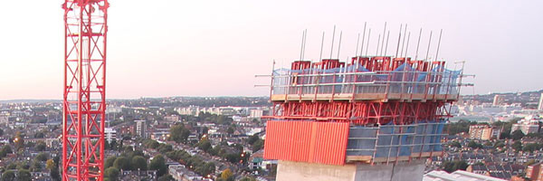
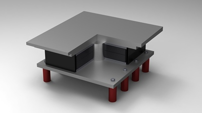

토목&건축분야 R&D
KUMHO E&C
Engineering & construction
기술혼을 담아 기술 선진국의 꿈을 실현합니다
- person 인명
- shield 구조물 보호
- calendar_month 공기 단축
- potted_plant 친환경
금호건설은 1986년 건설사업부 기술 연구실을 신설 한 후 KIDEA공법 등 독자적 기술을 가지고 있는 환 경사업분야, 30년 노하우를 지닌 주택사업분야까지 건설 전 분야에서 고도의 기술력을 유지해 온 40년 전통의 10대 건설업체입니다.
2002년 3월 국내 하수처리시설 건설 기술인 KIDEA 공법으로 첫 장영실 상을 수상하며 환경분야에서 독자적 위치를 확고히 해왔으며, 2004년 광주신청사, 2006년 전북도청사가 한국건축문 화대상을 수상하며 건축물에 있어서도 최고의 시공능력을 인정받아왔다.
금호건설의 토목,건축 연구 분야는 인명과 구조물 보호, 공기 단축을 위한 시공법 개발과 친환경 건설 사업 기술을 개발하고 있습니다.
이를 위하여 면진 시스템, PC공법, 초고층 아파트 시스템 개발, 대공간 구조물, 자가치유형 및 폐타이어 이용 방수 공법, 에너지절약형 다기능성 외피시스템 등의 연구개발을 하고 있습니다.
건축 및 토목분야 연구과제
- 교량에 내진 성능보강을 위한 지진격리 장치의 개발에 관한 연구
- ABAQUS를 이용한 흙막이구조물의 비선형해석
- 프리캐스트 콘크리트 아치교 급속시공 기술
- 콘크리트 성능개선연구 (재료 및 구조 성능실험)
- 철골조 초고층 아파트 시스템 개발 연구 (건설 6개사 공동수행)
- 무주대공간 구조물의 시스템 개발연구 (STRARCH 공법)
- 보수보강 공법의 성능평가 및 개발에 관한 연구
- 수분산 폴리머의 가교결합과 Coupling Agent를 통해 방수재의 상간접착력을 증진시키는 방수공법 발명
- 자가치유형 방수 공법
- 자기부상철도교량 하부구조의 급속 시공법 개발
- 에너지 절약형 다기능성 외피시스템 개발
- 지하수열원을 이용한 건축물 냉난방 시스템
연구분야
연구분야- Pre-cast concrete분절형 PC아치교 급속시공 기술
- 분절형 PC아치교 급속 시공 공법은 철근 기둥, 보, 슬래브, 벽 등 콘크리트 구조물을 공장에서 미리 만들어 건설 현장으로 운송 후 조립설〮치하는 방식이다. 현장에서 거푸집을 만들고 콘크리트를 타설*한 뒤 양생*을 거치는 기존 방식보다 공기를 획기적으로 단축하고, 비용을 절감할 수 있다. 또한 주요 구조물을 공장에서 만들고 접합부에만 일부 타설을 하면 되기에 현장 건설 폐기물 발생과 환경 영향도 최소화할 수 있다. 더불어 공장에서는 제작 환경을 일정하게 제어할 수 있기 때문에 프리캐스트 콘크리트 구조물의 품질을 일정하게 유지할 수 있다. 반면, 현장에서 콘크리트를 타설하게 되면 날씨나 기온, 작업자 숙련도에 따라 품질의 편차가 발생하기 쉽다. 따라서 공장 작업을 통한 구조물의 균일한 품질은 시공 전후의 안전과도 직결되므로 매우 큰 강점이다.
- 
-
- Slip form consturction변단면 슬립폼 급속시공 기술
- 본 공법은 7년 여 간 한국건설기술연구원 등 과의 국가연구과제를 수행하여 국산화에 성공한 기술로, 콘크리트 타워, 주탑, 교각 구조물의 단면이 변화되는 구간의 슬립폼 시공시 필요한 급속시공 기술이다 슬립폼 시공법은 한번 조립된 거푸집으로 콘크리트 타설-양생-거푸집 올리는 작업(상승) 등 3가지 작업이 모두 동시에 쉼 없이 24시간 이루어지고 별도의 거푸집 해체․조립 작업이 필요 없기 때문에 안전하고 신속한 공사가 가능한 것이 장점이다. 이로 인해 초장대교량 건설 때 변단면 슬립폼 시공법이 최근 많이 도입되고 있다.
-
- Bridge Isolation System교량면진 시스템
- PSC Beam 거더용 RFPB(Resilient friction Bearing) 및 HDRB (High Damping Rubber Bearing) 제품은 마찰 및 감쇠를 이용하여 지진력을 감소시키는 면진 설계를 위한 지진격리장치
- 